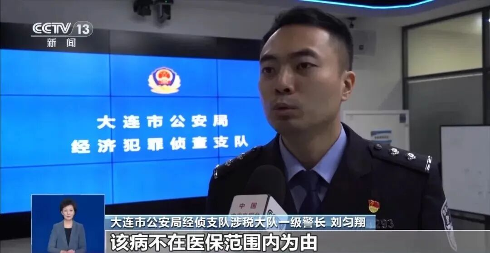
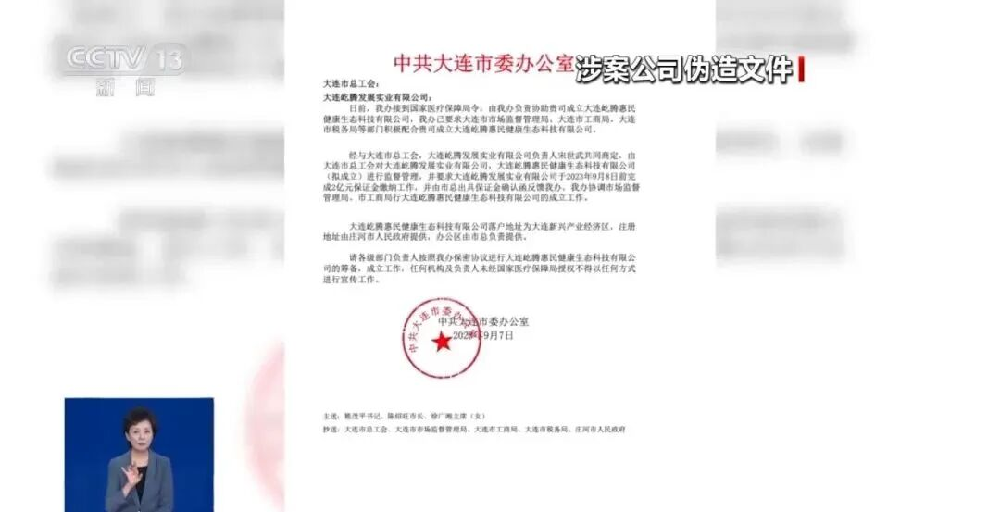
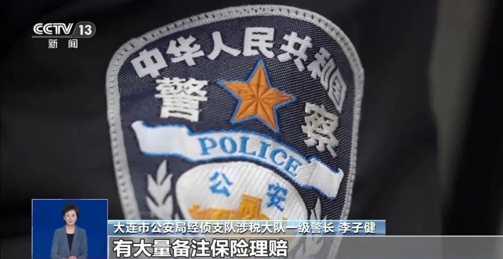
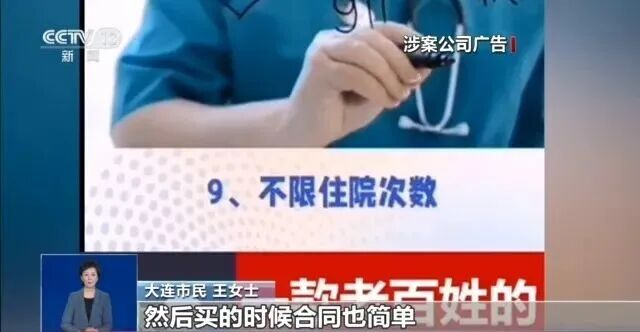

大连假“惠民保”，卷走7100万救命钱，遍及30省份！精心设计的骗局专门针对什么人群？
“从新生儿到百岁老人都能保，住院花费全都报，就连医保不管的进口药、透析费用也能理赔！”这样的保险广告曾让无数患病家庭心动不已。辽宁大连的王女士就是其中之一，她为家人购买了“屹腾惠民保障服务”产品，初期的2000余元医疗费理赔很顺利。
但当她的婆婆大病花费数万元申请理赔时，对方却以“病种不在保障范围内”为由拒绝了。类似的情况发生在全国30个省份，超过7万人陷入同一骗局。
“这款产品的年费在500元至1200元之间，承诺0免赔、可带病投保、1天生效，几乎涵盖了医保之外所有自费医疗支出。”大连市公安局经侦支队涉税大队一级警长李子健介绍。
这样宽松的条件对于被正规保险公司拒保的患病群体而言，无疑是一根救命稻草。而骗子正是抓住了非标体人群和老年人的保障焦虑。
1
无门槛投保骗局
自2023年9月起，一款名为“屹腾惠民保障服务”的产品通过短视频、互联网和宣传单等多渠道展开全国性推广。骗局的狡猾之处在于分年龄段收费和承诺全额报销。
这款产品按年龄分为三档收费，却承诺覆盖从新生儿到百岁老人，对因病被其他保险公司拒保的人群特别具有吸引力。大连市民王女士坦言，正是“有病也能买、全面报销”的承诺打动了她。
而“小额赔付诱骗、大额拒赔露馅”的套路让骗局得以持续蔓延。 投保人初期发生的小额医疗费用往往能顺利获得理赔，这让更多人对产品产生了信任。
但当投保人遭遇大病需要大额理赔时，涉案公司就会以“未如实告知”、“病种不在保障范围”等借口推脱责任。这种先予后取的策略让骗局得以维持近一年时间。

2
操盘手法
为了让骗局更具迷惑性，涉案团伙伪造政府机关公文，谎称产品获得“官方授权”，刻意营造政府背书的假象。他们还包装真实的小额理赔案例，甚至安排业务员在医院现场推销，强化产品的可信度。

高佣金制度成为骗局快速扩张的助推器。自2024年4月起，涉案公司推出高达27%的佣金激励，远高于正规商业保险5%-15%的水平。通过“总部统筹+区域代理+基层推销”的三级裂变模式，业务在短时间内渗透全国。
“他们用远高于正规保险公司的佣金招募区域代理，这导致其规模迅速扩张。”办案民警刘匀翔介绍。在不到一年时间内，涉案公司在10省15市设立分支机构，业务遍及全国30个省份。
3
警方收网
2025年2月，随着大额拒赔投诉增多，大连警方接到报案后正式介入调查。办案民警很快发现了异常：“这家公司并非传统意义上的保险公司，其经营范围也不包含保险业务。”
警方与金融监管部门联合核查发现，涉案公司根本不具备保险经营资质。银行流水显示大量款项备注“保险理赔”，已涉嫌非法经营。

大连金融监管局打击非法金融活动处调研员郝亮指出：“该公司没有获得金融监管总局及其派出机构的依法批准，不具备经营保险业务资质。其宣传材料和合同条款均与保险产品定义趋同。”
2025年4月27日，专案组组织百余名警力集中收网，抓获犯罪嫌疑人23名，同步关停“屹腾惠民”微信投保程序，彻底捣毁了这一跨区域非法保险经营网络。
4
案件警示
这起案件并非孤例。近期，海南、郑州、上海等多地都出现了类似“假保险”案件。不法分子利用消费者对保险知识的认知盲区，伪造官方背景、编造合规假象，窃取公众信任。
2024年7月至8月，海南金融监管局连续通报两起非法经营案。2024年底至2025年初，郑州、上海多名车主被自称“众安保险业务员”推销“低价车险”，投保后却遭遇理赔推诿。
2025年11月，一款名为“安我股保”的互联网平台以“0风险0亏损”“个股亏损当天全额理赔”等夸大宣传为诱饵，吸引消费者投资。中国保险行业协会明确表示，该平台并非监管批准设立的保险机构。

这些案件共同特点是：
①承诺远超出市场常规的保障范围和理赔条件；
②缺乏正规保险经营资质；
③采用高额佣金快速扩张；
④初期小额理赔兑现承诺，大额理赔时推诿拒绝。
5
结语
大连金融监管局提醒，惠民保产品虽然由政府指导，但本质上仍是商业保险，由保险公司承保。消费者投保时应通过官方渠道，核实保险公司资质。
正规惠民保产品不会承诺“全额报销”“无限制理赔”，而是有明确的保障范围和理赔条件。政府惠民政策会通过官方网站、正规新闻媒体发布，消费者可直接联系相关部门核实。
2025年7月，国家金融监管总局已印发通知，明确要求城市商业医疗险规范精准定价，基于年龄、健康状况实现差异化定价，杜绝虚假宣传与违规经营。
本文由 ShawnCH（何智翔）轉發，透過微信聊天記錄自動提取並整理。 原文連結：https://mp.weixin.qq.com/s/DNcG6jnw7GtSYRW4HVFYAw